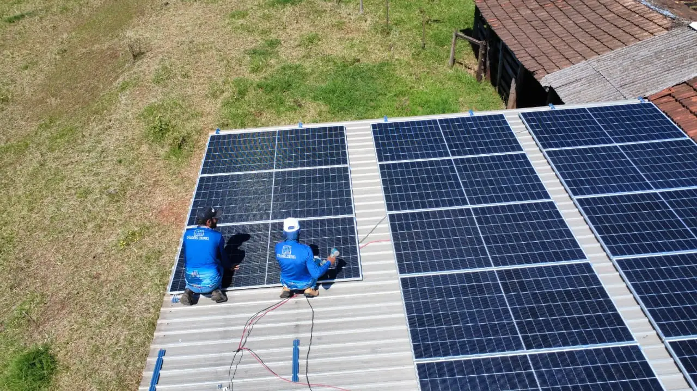
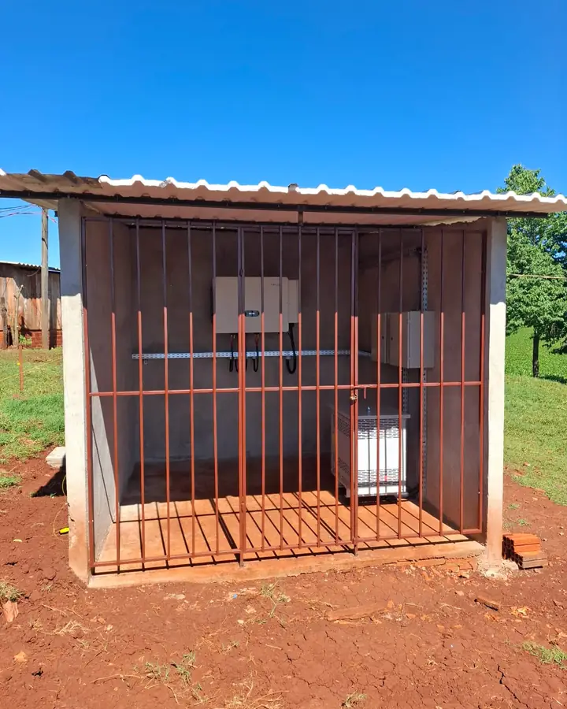

Clientes
Clientes atendidos pela M&A
Registros de entrega feitos pela nossa equipe.



Missal tem 1.753 sistemas de energia solar ligados à rede, e 620 deles estão em propriedades rurais. Quem instala aqui precisa conhecer aviário, pocilga e sala de ordenha tanto quanto telhado de casa. A M&A faz o projeto com ART no CREA-PR, instala com equipe própria e acompanha a Copel até a troca do medidor. A sede fica em Medianeira, a cerca de 25 km.
Atendimento de segunda a sexta, das 8h às 18h, e sábado até as 12hO responsável técnico da M&A Soluções Energéticas é o engenheiro eletricista Luiz Carlos da Cruz, CREA-PR 165161/D. Cada projeto tem uma ART emitida em nome dele e vinculada ao endereço da obra. O registro pode ser consultado no site do CREA-PR por qualquer pessoa, antes de assinar o contrato.
A instalação é feita por funcionários da empresa. Quem mede o telhado na visita é da mesma equipe que monta o sistema e que retorna na manutenção. Já são mais de 380 sistemas instalados nesse formato. Para o cliente, isso significa um único responsável quando aparece uma goteira, um disjuntor desarmando ou uma queda de geração.
A sede fica na Av. Brasil, 3030, bairro Itaipu, em Medianeira, a cerca de 25 km de Missal. É um endereço aberto, que você pode visitar. A equipe trabalha com NR-10 e NR-35 em dia, usa linha de vida no telhado e dimensiona as proteções pela NBR 16690.
Mande a foto da sua fatura. Você recebe o tamanho do sistema, o investimento estimado e o nome de quem assina o projeto.
Enviar minha conta de luz
O município cria 166 mil suínos e 2,6 milhões de aves e produz 15,7 milhões de litros de leite por ano, segundo a Pesquisa da Pecuária Municipal do IBGE. Por trás desses números há ventiladores, aquecimento de pinteiro, bombas, ordenhadeiras e resfriadores de leite ligados todos os dias. Para o produtor, a fatura da Copel é um custo do lote, como a ração.
Isso explica por que 620 dos 1.753 sistemas solares de Missal estão na área rural, mais de um em cada três. Na classe rural, a potência do sistema do meio da lista da ANEEL é de 8 kW, o suficiente para um sítio com ordenha ou um aviário pequeno. Propriedades com vários galpões pedem bem mais.
Na cidade o movimento também é grande. São 969 sistemas residenciais para 4.133 domicílios contados no Censo 2022, perto de um sistema para cada quatro casas. Quem ainda não tem costuma ter um vizinho que tem, e vale perguntar a ele como foi o atendimento depois da instalação.
Sobre o pagamento: produtor rural tem acesso a crédito rural, com juros menores que os do crédito comum, e há linhas bancárias para casas e empresas. O banco decide a aprovação. A empresa de energia solar entra com o projeto, o orçamento e os documentos técnicos que o banco pede.
Leve esta lista para toda proposta que receber em Missal. A nossa também precisa responder.
A proposta deve trazer nome e número de registro. Digite o número no site do CREA-PR e veja se o registro está ativo e se a empresa aparece vinculada.
Peça o endereço e, se puder, passe lá. Uma sede aberta, com gente trabalhando, é a quem você vai recorrer daqui a dez anos.
Pergunte se os instaladores são funcionários ou contratados só para a sua obra. Equipe montada por serviço não está disponível quando a garantia é acionada.
Confira se constam potência em kWp, marca e modelo dos módulos e do inversor, tipo de fixação, proteções, ART e o processo na Copel.
Peça o contato de alguém atendido em Missal ou em cidade vizinha. Pergunte como foi a obra e, principalmente, o retorno depois dela.
Módulo, inversor e instalação têm prazos diferentes, dados por empresas diferentes. Os três devem aparecer em linhas separadas.
Mande o arquivo. Devolvemos uma comparação linha por linha: potência, equipamentos, proteções e o que não foi incluído. Você decide com quem fecha.
Cinco etapas. Em cada uma você sabe o que está sendo feito e por quem.
Lemos doze meses de consumo. Em sítio, separamos o que é da casa e o que é de aviário, pocilga, ordenha ou bomba.
Vamos ao local medir telhado, madeiramento, sombra de árvores e silos e conferir o padrão de entrada.
Potência em kWp, equipamentos com marca e modelo, geração prevista mês a mês, valor e prazo de retorno.
Feita por funcionários da M&A. Em casa, costuma levar de dois a três dias úteis. Em galpão, o prazo depende da área.
Protocolamos o pedido de acesso, acompanhamos a vistoria e a troca do medidor. O sistema só é ligado depois dessa troca.
Os registros da ANEEL mostram o tamanho típico dos sistemas do município, pela potência do meio da lista em cada classe: 5 kW nas casas, 8 kW na área rural, 17,6 kW no comércio e 75 kW na indústria. Cada grupo pede um cuidado diferente de quem projeta.
Galpão de aviário tem telhado grande e bem orientado, mas foi construído para aguentar telha, e não módulos. Conferimos as terças e o vão antes de aprovar. O ar com amônia também conta: usamos módulos ensaiados para esse ambiente e, quando o galpão não serve, montamos a estrutura no chão ou em outra cobertura da propriedade.
O que mais aparece é padrão de entrada antigo, que a Copel exige adequar antes da ligação. Verificamos isso na visita e o valor entra na proposta, em linha própria. No comércio, o consumo em horário de sol ajuda: a energia é usada na hora, sem depender de crédito.
Quem é atendido em média tensão paga pela energia e pela demanda. O sistema solar reduz só a primeira. Mostramos as duas partes separadas no estudo, para a economia prevista bater com a fatura real. Há mais detalhes em energia solar industrial em Missal.
Em outubro de 2026, a ANEEL registrava 1.753 sistemas de energia solar conectados à rede em Missal, somando 35,7 MW de potência instalada.
São 969 sistemas residenciais, 620 rurais, 86 comerciais e 69 industriais, instalados por diferentes empresas ao longo dos últimos anos.
Em um mercado desse tamanho, conferir o responsável técnico e a ART de quem instala faz diferença.
Fontes: ANEEL, Relação de Empreendimentos de Geração Distribuída (dados de outubro de 2026).
Registros de entrega feitos pela nossa equipe.
Em Missal, atendemos a cidade, as comunidades do interior e as propriedades próximas ao Lago de Itaipu. A equipe sai da sede da M&A, na Av. Brasil, 3030, bairro Itaipu, em Medianeira, a cerca de 25 km. A visita técnica é gratuita e não obriga a fechar negócio. A mão de obra da instalação tem garantia de 5 anos. O prazo final depende da Copel. A finalização do nosso serviço leva em torno de 45 a 60 dias.
As mesmas pessoas atendem os municípios vizinhos:
Mora em uma comunidade que não está na lista? Pergunte. Atendemos todo o Oeste do Paraná a partir de Medianeira.
Com 1.753 sistemas instalados no município, há muita empresa vendendo. Estes quatro sinais ajudam a separar as propostas.
Contrato sem ninguém ter ido ao local. Um valor aproximado pela fatura é normal. Assinar sem que alguém tenha visto o telhado, o madeiramento e o padrão de entrada deixa essas surpresas para o meio da obra.
Oferta que vale só hoje. Um sistema solar dura mais de 25 anos. Não há motivo técnico para decidir no mesmo dia, e a pressa impede você de comparar.
Conta zerada. Sempre fica o custo de disponibilidade, de 30, 50 ou 100 kWh conforme a ligação seja monofásica, bifásica ou trifásica, mais a iluminação pública. Quem promete fatura zero não explicou a regra.
Só o valor da parcela. A proposta precisa informar a potência em kWp e a marca dos equipamentos. Sem esses dados, duas propostas com a mesma parcela podem ser sistemas bem diferentes.
Para o estudo do seu caso, veja orçamento de energia solar em Missal e energia solar em Missal. Para condições de pagamento, consulte financiamento de energia solar em Missal. O índice completo está no mapa do site.


Na proposta, o módulo vem com marca, modelo e ficha técnica. Trabalhamos hoje com modelos de 620 W (Ronma, Gokin e ERA); um sistema de 6,2 kWp usa 10 deles. Ao comparar propostas, confira a garantia: aqui são 15 anos contra defeito e 30 de desempenho.
Inversores Sofar de 5 kW a 30 kW e Auxsol de 7,5 kW. O trifásico de 30 kW monitora cada série de módulos separadamente e traz protetor de surto tipo II nos lados de corrente contínua e alternada. Todos têm proteção IP65 ou IP66.
Os dados completos de cada ficha técnica estão em módulos e inversores que a M&A instala.
Mande a foto da fatura pelo WhatsApp. O estudo mostra o tamanho do sistema, a economia prevista e o prazo de retorno, e não tem custo.
Solicitar orçamento gratuito Atendimento humano · Seg a Sex, 8h às 18h